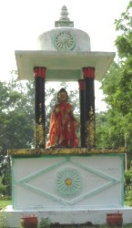
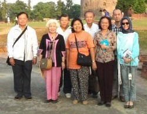

Hành hương - 2004
Bình Anson
-ooOoo-
1. Hành hương Ấn Độ
2. Hành hương Việt Nam
3. Hành hương Thái Lan
Năm nay, chuyến đi hành hương của chúng tôi kéo dài 5 tuần lễ, từ ngày 24-10-2004 đến ngày 26-11-2004, gồm có 2 tuần ở Ấn Độ - Nepal, 1 tuần ở Thái Lan, và 2 tuần ở Việt Nam.
---*---
Chủ Nhật, 24-10-2004: Rời Perth lúc 17:00 giờ, đáp máy bay của hãng Thai Airways trực tiếp đến phi trường Donmuang, Bangkok, vào đúng nửa đêm. Em vợ tôi ra đón và đưa về nhà.
Thứ Hai, 25-10-2004: Buổi sáng, đến chùa Wat Donmuang. Hôm nay có một khóa thiền, với hơn 100 Phật tử tham dự. Thiền sinh mặc y phục màu trắng, giữ bát quan trai, tu thiền trong một đêm một ngày.
Đến ch
ùa Wat Budsiam, lễ Phật và viếng thăm nơi chôn tro cốt của ông bà ngoại vợ, theo thông tục, mai táng vào bức tường thành quanh chùa.Tôi gọi điện thoại thăm Sư Tịnh Giác, chùa Wat Samphrya, khu Samsen. Sư đề nghị chúng tôi cùng đi tham quan cố đô Ayutthaya ngày hôm sau với một nhóm Phật tử từ Sài Gòn sang, nhưng tôi từ chối vì còn bận nhiều việc khác. Buổi chiều, chúng tôi đi mua sắm ở thương xá Future Park, Rangsit.
Thứ Ba, 26-10-2004: Sáng sớm, 6:00 giờ, để bát cho chư Tăng chùa Wat Donmuang đi khất thực trì bình trong xóm. Chùa có đông chư Tăng, nên chia ra thành từng nhóm 5, 6 vị đi khất thực từng khu vực riêng.
Đến khu chợ trời gần nh
à, họp mỗi tuần, bán quần áo giá rẻ, đẹp, nhưng chất lượng thấp. Sau đó, đi mua sắm ở thương xá Latphrao. Kiểm thư tại một tiệm Cafe Internet, có broadband ADSL nhưng giá rất rẻ, 10 Bahts (US$ 0.25) cho 30 phút. Đa số khách hàng là các em trẻ, đến đó để chơi games. Gọi điện thoại đến bà Kwanthai, người tổ chức chuyến hành hương, để kiểm tra lịch trình hành hương.Thứ Tư, 27-10-2004: Sáng sớm, 6:00 giờ, để bát cho chư Tăng chùa Wat Donmuang đi khất thực trì bình trong xóm. Một vị sư trẻ, tốt nghiệp đại học, có hỏi thăm về việc thành lập trang web cho chùa.
Vào trung tâm Bangkok, bằng xe buýt công cộng, rồi Sky Train, một loại xe lửa điện chạy trên tầng cao. Mua sắm tại thương xá MBK (Mabuakrong), nổi tiếng của Bangkok. Mua thẻ điện thoại để gọi về Úc, giá khoảng 6 Bahts (US$ 0.15) một phút.
-ooOoo-
Phần 1
Hành hương Ấn
Độ
- Này Ananda, có bốn Thánh tích kẻ thiện tín cần phải chiêm ngưỡng và tôn kính. Thế nào là bốn?
"Ðây là chỗ Như Lai đản sanh". Này Ananda, đó là thánh tích, kẻ thiện tín cần phải chiêm ngưỡng và tôn kính.
"Ðây là chỗ Như Lai chứng ngộ vô thượng Chánh Ðẳng Giác", này Ananda, đó là Thánh tích, kẻ thiện tín cần phải chiêm ngưỡng và tôn kính.
"Ðây là chỗ Như Lai chuyển Pháp luân vô thượng", này Ananda, đó là Thánh tích, kẻ thiện tín cần phải chiêm ngưỡng và tôn kính.
"Ðây là chỗ Như Lai diệt độ, nhập Vô dư y Niết-bàn", này Ananda, đó là Thánh tích, kẻ thiện tín cần phải chiêm ngưỡng và tôn kính.
Này Ananda, đó là bốn Thánh tích, kẻ thiện tín cư sĩ cần phải chiêm ngưỡng và tôn kính. Này Ananda, các thiện tín Tỷ-kheo, Tỷ-kheo ni, cư sĩ nam, cư sĩ nữ sẽ đến với niềm suy tư: "Ðây là chỗ Như Lai đản sanh", "Ðây là chỗ Như Lai chứng ngộ vô thượng Chánh Ðẳng Chánh Giác", "Ðây là chỗ Như Lai chuyển Pháp luân vô thượng", "Ðây là chỗ Như Lai diệt độ, nhập Vô dư y Niết-bàn".
Này Ananda, những ai, trong khi chiêm bái những Thánh tích mà từ trần với tâm thâm tín hoan hỷ, thời những vị ấy, sau khi thân hoại mạng chung sẽ được sanh cõi thiện thú, cảnh giới chư Thiên. -- (Kinh Ðại Bát-Niết-Bàn, Mahàparinibbàna sutta - Trường Bộ 16)
*
Thứ Năm, 28-10-2004: Hôm nay là ngày mãn mùa Hạ của Tăng đoàn. Chúng tôi đến chùa Wat Donmuang để dự lễ vào buổi sáng. Buổi chiều, ra phi trường để nhập đoàn hành hương. Đoàn gồm 9 người, trưởng đoàn là Giáo sư Jahn (Ajahn Jahn), phụ tá là bà Kwanthai, ngoài tôi ra thì các người kia đều là Phật tử Thái.
Đáp máy bay của h
ãng Indian Airlines, rời Bangkok lúc 16:00 giờ và đến Kolkata (Calcuta) lúc 18:00 giờ. Phi trường nghèo nàn, nhân viên làm việc chậm chạp.Lên xe buýt lớn, 32 chỗ ngồi, có máy lạnh, có 3 người Ấn Độ: 1 hướng dẫn viên du lịch (tên là Durages), 1 lái xe, và 1 phụ lái. Rời phi trường lúc 20:30 tối, đi Bodh Gaya, hành trình khoảng 700 km. Cả đêm, xe chạy theo xa lộ chính, nhưng chậm vì trên đường có rất nhiều xe tải. Xe dừng lại 2 lần, để uống trà và để tài xế nghỉ ngơi khoảng 2 giờ. Ăn trưa bên đường, thử món bánh mì roti và cà-ri đậu của Ấn Độ.
Thứ Sáu, 29-10-2004: Đến Bodh Gaya (Bồ Đề Đạo Tràng) lúc 13:00 giờ. Đem hành lý vào khách sạn Sujata, cạnh chùa Thái Lan, Wat Thai Bodhgaya.
Chúng tôi thuê xe xích lô, đến thăm khu làng nơi nàng Sujata ở, rồi đến bờ sông Ni-Liên-Thuyền (Niranjana, Phalgu), nơi Đức Phật nhận bát sữa, trước khi vượt sông sang bên kia bờ để tọa thiền trước khi Thành Đạo.
Sông khô cạn. Chúng tôi thấy một đám tang, thi hài người chết được bó lại, đem ra bờ sông, chất củi đốt. Thân nhân lặng lẻ ngồi quan sát, buồn rầu, nhưng không một lời than khóc.
Trở lại Bồ Đề Đạo Tràng, chúng tôi đến viếng đền tháp Mahabodhi (Đại Bồ-đề) và cội bồ đề nơi Đức Phật thành đạo. Đền Mahabodhi với tháp cao 52 m, được quốc vương Miến Điện trùng tu vào năm 1874, trên nền ngôi tháp do vua A-Dục (Asoka) xây cất vào khoảng thế kỷ thứ 3 trước Tây Lịch, đánh dấu nơi Đức Phật thành đạo. Bên trong tháp có một tượng Phật cao khoảng 2 m, được tạc ra vào thế kỷ 10 TL.
Rất đông chư Tăng đủ mọi nguồn gốc, ngồi trong khuôn viên bao quanh, tham thiền hoặc tụng kinh. Đông nhất là chư Tăng Tây Tạng. Trong khuôn viên, chúng tôi đến thăm và lễ bái di tích những nơi Đức Phật ngự trong 7 tuần lễ đầu tiên sau khi giác ngộ.
Sau đó, chúng tôi thăm viếng chùa Nhật Bản (Daijokyo), nơi có một tượng Phật lộ thiên cao khoảng 25 m và hai bên là tượng các vị đại đệ tử; và đến viếng chùa Tây Tạng (Kagyu) gần đó.
Trở về chùa Wat Thai Bodhgaya, dự khóa lễ tụng hằng ngày. Sau đó, dùng cơm chiều, thức ăn Thái do các cô tu nữ nấu. Trở lại cội bồ đề lúc 7:00 giờ tối để tham dự khóa lễ tụng kinh chiều, do chư Tăng Thái hành lễ, âm thanh khóa tụng nghe rất hay, rất truyền cảm. Cổng mở cửa lúc 8:00 giờ tối, chúng tôi đi vào chiêm bái và lễ lạy cội bồ đề và Kim cương tòa là nơi Đức Phật ngồi tham thiền. Đi nhiễu Phật quanh tháp 3 vòng, tham thiền khoảng 1 giờ, rồi đi bộ trở về khách sạn, lòng hoan hỷ.
Bên ngoài, có rất nhiều quầy hàng bán quà lưu niệm và đổi tiền. Chúng tôi đổi một ít tiền, hối suất USD $1 = Indian Rupee $42. Vì nơi nầy có rất đông khách hành hương Thái Lan, các cửa hàng ở đây cũng nhận tiền Baht, trung bình: 1 Thai Baht = 1 Rupee. Ở đây có các quầy điện thoại để gọi đi khắp nơi trên thế giới, giá cả rất phải chăng.
Tại khách sạn có một phòng thờ, tượng Phật lớn, để tham thiền. Chấu cắm điện tại phòng ngủ khách sạn có 2 lỗ tròn, theo tiêu chuẩn cũ của Anh quốc, nhưng cũng có trang bị thêm 2 lỗ nhỏ theo kiểu châu Âu.
Thứ Bảy, 30-10-2004: Thức dậy lúc 4:00 giờ sáng. Đến bờ sông Ni-Liên-Thuyền để ngắm nhìn cảnh mặt trời mọc, ánh mặt trời chiếu vào đền tháp. Thật là hùng vĩ! Đến thăm và chụp hình chùa Viên Giác, trước chùa có xây một tháp cao, phỏng theo mô hình chùa Một Cột (Hà Nội), bên trong có thờ tượng Quán Thế Âm.
Trở về chùa Thái để ăn sáng và chào từ giả ngài Hòa thượng trụ trì. Rời Bodh Gaya lúc 7:00 giờ, lên đường đi Vương Xá (Rajgir, Rajagriha, Rajagahar), cách Bodh Gaya khoảng 97 km về mạn đông bắc.
Đến Rajgir khoảng 9:30
sáng. Khi vừa vượt qua tường thành vòng ngoài, chúng tôi dừng lại để xem một nơi còn để lại dấu vết các bánh xe khắc sâu trên đá, lưu lại từ thời Đức Phật. Rồi tiến thẳng đến chân dảy núi Chhatha, trong đó có đỉnh Gridhrakuta (Linh Thứu).
 Với sự hướng dẫn của một cảnh sát viên, chúng tôi chậm rãi
đi bộ lên
đỉnh núi. Tương truyền rằng đường nầy
là do vua Bình-Sa (Bimbisara) lập ra
để đến thăm Đức Phật. Còn lại dấu tích nơi vua xuống ngựa, và nơi
vua bắt đầu một mình
đi lên
đỉnh núi để yết kiến Đức Phật. Ngoài ra, cũng có các hang nơi quý
Ngài Mục-Kiền-Liên, Xá-Lợi-Phất, và A-Nan trú ngụ. Trên
đỉnh núi là một bức tường thấp bao
quanh nơi Đức Phật thường ngự để giảng dạy
cho hàng đệ tử. Tôi quỳ lễ lạy,
rồi đến ngồi tại một mỏm đá gần đó, trầm tư,
ngắm nhìn cảnh núi rừng chung quanh. Rất yên tĩnh, an bình.
Với sự hướng dẫn của một cảnh sát viên, chúng tôi chậm rãi
đi bộ lên
đỉnh núi. Tương truyền rằng đường nầy
là do vua Bình-Sa (Bimbisara) lập ra
để đến thăm Đức Phật. Còn lại dấu tích nơi vua xuống ngựa, và nơi
vua bắt đầu một mình
đi lên
đỉnh núi để yết kiến Đức Phật. Ngoài ra, cũng có các hang nơi quý
Ngài Mục-Kiền-Liên, Xá-Lợi-Phất, và A-Nan trú ngụ. Trên
đỉnh núi là một bức tường thấp bao
quanh nơi Đức Phật thường ngự để giảng dạy
cho hàng đệ tử. Tôi quỳ lễ lạy,
rồi đến ngồi tại một mỏm đá gần đó, trầm tư,
ngắm nhìn cảnh núi rừng chung quanh. Rất yên tĩnh, an bình.
Từ đỉnh Linh Thứu, chúng tôi nhìn sang một đỉnh núi cao khác, nơi có xây tháp Vishva Shanti màu trắng và chùa Saddharma (Diệu Pháp) của phái Nipponzan Myohoji, Nhật Bản. Từ chân núi, có thể dùng xe cáp (cable car) để đến chùa nầy.
Trở xuống chân núi, chúng tôi ghé vào một quầy hàng lưu niệm có quen biết bà Kwanthai, và thỉnh mua các tượng Phật nhỏ bằng đá và vài vòng đeo trang sức bằng đá màu.
Rời núi Linh Thứu, chúng tôi đi thăm chùa Thái Sirirajgir. Trên đường đi, chúng tôi ghé vào viếng bệnh xá của y sĩ Jivaka (Jivakamravana), và nhà tù nơi vua Ajatashatru (A-Xà-Thế) giam vua Bimbisara, và từ nơi đây có thể nhìn thấy đỉnh Linh Thứu như đã ghi trong kinh điển. Chúng tôi cũng được Giáo sư Jahn chỉ cho thấy nơi hỏa táng của người dân địa phương, là một nơi đã có từ thời Đức Phật, vẫn còn hoạt động cho đến ngày nay, và suối nước nóng gần đó.
Dùng cơm trưa tại chùa Thái Sirirajgir, tại một gian nhà dựng tạm thời, vì chùa đang được xây dựng. Khi hoàn tất, sẽ có một khách xá rất tốt, yên tĩnh, cho khách hành hương. Từ nơi nầy, chúng tôi có thể nhìn thấy động Sattapanni (Saptaparni) trong dảy núi Vaibhara - nơi kết tập kinh điển lần thứ nhất sau khi Đức Phật nhập diệt, và hang Pippala của Ngài Đại Ca-Diếp.
Sau đó, chúng tôi đến viếng vườn Trúc Lâm (Veluvana). Qua cổng vào, phía bên trái, là một gò đất cao, có thể bên trong là di tích của ngôi chánh điện và các bảo tháp, nhưng chưa khai quật. Như tên gọi, chúng tôi thấy nơi đây có trồng rất nhiều cây tre lớn, có một hồ nước lớn (hồ Karanda) là nơi Đức Phật thường đến tắm. Cạnh bờ hồ là một tượng Phật nhỏ, đánh dấu nơi Ngài giảng bài pháp "Ovada-Patimokkha Gatha" cho 1,250 vị Tỳ khưu A-La-Hán vào ngày Rằm tháng Giêng (Magha Puja):
|
Không làm mọi điều ác. Thành tựu các hạnh lành, Tâm ý giữ trong sạch, Chính lời chư Phật dạy. (PC 183) Chư Phật thường giảng dạy; Không phỉ báng, phá hoại, |
 |
Rời Trúc Lâm, chúng tôi tiến đến Nalanda, vào viếng thăm chùa Wat Thai Nalanda và đại học Nalanda ngày nay. Sau đó, đến tham quan di tích của đại học Nalanda cổ xưa và tháp thờ Ngài Xá-Lợi-Phất. Trên đường đi, chúng tôi ghé vào xem di tích chuồng voi, nơi Devadatta cho voi Nalagiri uống rượu say để thả ra, mưu toan làm hại Đức Phật; và hang chứa kho tàng của vua Bimbisara. Chúng tôi cũng dừng xe lại và mua bánh Khajah, giống như loại bánh chiên giò chéo quảy, nhưng có tẩm đường mật. Đây là loại bánh đã có từ thời Đức Phật.
Sau cùng, chúng tôi đến thành phố Patna (Pataliputta), thủ đô của bang Bihar, lúc 6:00 giờ tối, ở qua đêm tại khách sạn Pataliputta. Tôi gọi điện thoại đến thăm thân phụ của một người bạn Ấn Độ. Anh bạn nầy hiện làm cùng sở với tôi tại Perth.
Chủ Nhật, 31-10-2004: Dùng điểm tâm lúc 6:30, rồi lên đường. Chúng tôi ghé qua đền Asokaram, nay chỉ còn di tích vài trụ đá, đánh dấu nơi Kết Tập Kinh Điển lần thứ III. Đi qua cầu Mahatma Gandhi dài 8 km, qua sông Gange (sông Hằng) tiến đến thành phố Vaishali (Vesali, Tỳ-Xá-Ly), nơi Kết Tập Kinh Điển lần thứ II. Vesali là nơi bà Gotami (Mahaprajapati) xin xuất gia, thành lập Ni đoàn, và là nơi có khu vườn xoài của bà Amrapali, như đã ghi lại trong kinh điển.
Chúng tôi đến viếng hồ Kharauna Pokhar của bộ tộc Vajji. Gần đó là tháp Vishva Shanti do phái Nipponzan Myohoji xây dựng vào năm 1996.
Dùng cơm trưa tại một nhà hàng của người Hồi giáo, với món cà ri dê rất đặc biệt, rồi tiến đến Kusinara (Kushinagar, Câu-Thi-Na) vào lúc 4:30 chiều.
Chúng tôi đến viếng khu di tích Đại Bát Niết Bàn (Mahaparinibbana), ở đó có chùa Đại Niết Bàn được xây dựng vào năm 1956, trên nền ngôi chùa cỗ xưa. Bên trong là tượng Phật nằm, dài khoảng 6.1 m, được khai quật vào năm 1876-77. Tượng Phật được tạc từ một khối đá màu hồng đỏ, vào khoảng thế kỷ 5 TL, tư thế Đức Phật nằm nghiêng bên phải, mặt nhìn về hướng tây, đầu hướng về phương bắc. Phía dưới có tạc 3 tượng nhỏ: bên trái là một nữ cư sĩ tóc dài, tư thế quỳ lạy, có lẽ để tượng trưng cho dân chúng bộ tộc Malla; ở giữa là một tỳ khưu trong tư thế tọa thiền, có lẽ là Tôn giả Anurudha (A-Nậu-Lâu-Đà); bên phải là một tỳ khưu trong tư thế buồn rầu, có lẽ là Tôn giả Ananda. Chúng tôi quỳ lễ lạy Đức Phật, rồi chấp tay, cung kính đi nhiễu 3 vòng.
Phía sau chùa là một tháp lớn, đánh dấu nơi Đức Phật nhập diệt. Chúng tôi cung kính quỳ lạy rồi đi nhiễu 3 vòng quanh tháp, lòng bồi hồi tưởng nhớ đến Ngài.
Chúng tôi lên xe, đến viếng tháp Makutabandhana, là nơi hỏa táng Ngài. Nay là một gò đất lớn với đường kính khoảng 35 m. Trời sập tối rất nhanh nên chúng tôi không ở lại lâu. Sau đó, chúng tôi đến chùa Wat Thai Kushinagar để ở qua đêm.
Wat Thai Kushinagar là một ngôi chùa lớn, rất đẹp, và có một khách xá 2 tầng, rộng rãi, khang trang, đầy đủ tiện nghi. Chúng tôi dùng cơm chiều, rồi đến chánh điện dự lễ tụng kinh. Sau đó, đến quầy nước để uống trà sữa nấu với gừng, như người dân địa phương thường uống.
Thứ Hai, 01-11-2004: Sáng sớm, chúng tôi gặp được phái đoàn hành hương của các Phật tử VN ở Bắc Mỹ, cũng đến nghỉ tại chùa trong đêm hôm trước. Đoàn nầy do Tỳ khưu Giác Đẳng (chùa Pháp Luân, Texas) hướng dẫn. Trong đoàn còn có Tỳ khưu Tịnh Giác (chùa Samphrya, Bangkok) và Tỳ khưu Chơn Trí (chùa Pháp Vân, California). Tôi được dịp trò chuyện với một số anh chị Phật tử mà chúng tôi có liên lạc từ trước, qua mạng Internet, nay mới có cơ hội gặp mặt.
Lên xe lúc 7:00 giờ sáng, chúng tôi ghé thăm nơi Ngài Ananda lấy nước để dâng đến Đức Phật trong ngày cuối cùng Ngài còn tại thế. Trở lại chùa Đại Niết Bàn để lễ lạy Phật, rồi thẳng tiến đến thị trấn Sonauli, ở biên giới Ấn Độ - Nepal. Sau khi làm thủ tục nhập cảnh, chúng tôi đi vào Nepal, hướng về Lâm-Tỳ-Ni (Lumbini).
Đến khu di tích Lumbini v
ào lúc 13:00 giờ trưa. Đây là một khu đất rộng, 4 km x 4 km, trồng rất nhiều cây Simsapà, làm tôi nhớ lại bài kinh Simsapà (Tương Ưng 56.31), trong đó, Ðức Phật dạy tuy rằng Ngài biết rất nhiều điều, nhiều như những lá cây trong rừng Simsapà, Ngài chỉ giảng dạy những gì cần thiết để giác ngộ, như những chiếc lá Simsapà trong nắm tay Ngài.Chúng tôi đến viếng đền Mayadevi (Mahamaya) và cột trụ Asoka, dựng lên vào khoảng năm 250 trước TL. Bên trong đền là cấu trúc nền nhà cỗ xưa đã được khai quật, trong đó có một bia đá đánh dấu nơi Đức Phật đản sinh. Cạnh đền thờ là hồ Pushkarini là nơi ngài Bồ Tát được tắm rửa sau khi đản sinh.
Chúng tôi vào thăm ngài trụ trì chùa Nepal kế bên (Lumbini Dharmodaya Samiti Dharmashala), chùa Tây Tạng, và nhà nghỉ của ông U Thant, cố Tổng Thư Ký Liên Hiệp Quốc và là người đã bỏ nhiều công sức để trùng tu di tích lịch sử này.
Sau đó, chúng tôi lên xe đi viếng chùa Wat Thai Lumbini, đẹp và rộng lớn. Chúng tôi được ngài Đại đức trụ trì tặng cho các tượng Phật nhỏ, và mời ở lại dùng nước giải khát.
Chiều hôm đó, chúng tôi trở về vùng biên giới và ngủ tại khách sạn Yeti trên phần đất Nepal.
Thứ Ba, 02-11-2004: Chúng tôi dùng điểm tâm tại khách sạn lúc 6:30 sáng. Trở về phần đất Ấn Độ, và thẳng tiến đến thành Ca-Tỳ-La-Vệ (Kapilavastu), kinh đô của bộ tộc Thích-ca (Sakya). Ngày xưa, Kapilavatsu bao gồm một vùng đất rộng lớn, ở biên giới Nepal - Ấn Độ. Nhưng vì điều kiện an ninh, Giáo sư Jahn quyết định chỉ đến thăm viếng phần đất thuộc lãnh thổ Ấn Độ mà thôi. Phần đất này bao gồm 2 làng: Piprahwa và Ganwaria. Nơi đây, vào năm 1897-98, một người Anh tên là W.C. Peppe đã đào tìm được 2 hũ đá, bên trong có chứa xá lợi của Đức Phật, và hiện nay được lưu giữ tại Viện Bảo Tàng Quốc Gia ở thủ đô Delhi. Chúng tôi có đến viếng thăm 2 tháp lớn, nơi mà xá lợi Phật đã được tìm thấy.
Chúng tôi đến viếng chùa Sri Lanka gần đó, tên là Mahinda Mahavihara. Ghé ăn trưa tại thành phố Balrampur, rồi tiến về Xá-Vệ (Shravasti, Savatthi), kinh đô của bộ tộc Koshala (Kosala). Chúng tôi vào thăm một đồi cao, đánh dấu nơi Đức Phật đấu phép với ngoại đạo (vào mùa Hạ thứ 7), và thâu phục nhà vua cùng dân chúng thành Xá-Vệ.
Chúng tôi đến thăm nhà Trưởng giả Cấp Cô Độc (Anathapindika) và kế bên đó là nhà cha mẹ của Ngài Angulimala. Sau đó, lên đường đến thăm Tinh xá Kỳ Viên (Jetavana Vihara).
Trong khuôn viên của Jetavana, chúng tôi đến viếng tịnh thất của các Ngài Ca-Diếp, Upali, Sivali, La-Hầu-La, Mục-Kiền-Liên, Angulimala, và Xá-Lợi-Phất. Trong một ngôi chùa, chúng tôi còn thấy dấu tích 8 tháp thờ xá lợi của các Ngài: Kiều-Trần-Như, Ca-Diếp, Xá-Lợi-Phất, Ưu-Ba-Li, A-Nan, Ca-Chiên-Diên, Mục-Kiền-Liên, và La-Hầu-La.
Chúng tôi đến chiêm bái cội bồ đề Ananda, do Ngài Ananda trồng để tưởng nhớ Đức Phật, và gần đó là Tịnh thất Kosamba, nơi Đức Phật thường vào đó nghỉ.
Đi sâu vào bên trong Kỳ Viên, chúng tôi đến lễ bái Hương phòng (Gandhakuti), có cấu trúc tương tự như Kosambakuti, nhưng rộng lớn hơn, là nơi Đức Phật ngự khi Ngài ở Kỳ Viên. Sau khi lễ bái, chúng tôi đến một giếng nước gần đó, có trang bị một bơm tay. Bơm nước lên để rửa mặt và giải khát, sau một ngày nắng gắt và nóng nực. Cảm thấy nhẹ nhàng, an lạc. Đây là một đại phước duyên.
Rời Kỳ Viên, chúng tôi đến thăm Viện Phật Học Maha Mongkol Chai, do bà tu nữ Mongkol Chai, người Thái Lan, thành lập. Đây là một cấu trúc rộng lớn, với nhiều thiền đường, để khách thập phương đến tu tập.
Sau đó, chúng tôi đến thăm chùa Sri Lanka, và xin phép ngài trụ trì để bước lên sân thượng. Từ nơi này, chúng tôi nhìn thấy được ao sen, nơi nàng Cinca đã bị cuốn hút xuống địa ngục vì mang tội vu oan Đức Phật.
Tối hôm đó, chúng tôi ngủ tại một nhà khách của cộng đồng Phật tử Sri Lanka.
Thứ Tư, 03-11-2004: Chúng tôi rời nhà khách lúc 6:30 sáng. Dùng điểm tâm trên xe. Hai bên đường trồng nhiều hàng cây xoài. Người Ấn Độ chỉ dùng trái xoài để ép nước khi xoài chín muồi, hoặc để làm thuốc. Hình như họ không ăn loại xoài xanh non như người Việt chúng ta.
Đến Varanasi (Benares, Ba-La-Nại) v
ào lúc 3:00 trưa, rồi tiến thẳng đến Sarnath, nơi Đức Phật chuyển Pháp Luân. Trước khi vào Sarnath, chúng tôi thấy tháp Chukhandi bên đường, đánh dấu nơi Đức Phật lần đầu tiên đến gặp 5 anh em Kiều Trần Như, sau khi Ngài thành đạo.Tại Sarnath, chúng tôi đến tháp Dhamekha, cao khoảng 33.5 m với đường kính 28.5 m, đánh dấu nơi Ngài chuyển Pháp Luân, đi nhiễu 3 vòng, rồi ngồi xuống, chắp tay lắng nghe Giáo sư Jahn tụng bài kinh Chuyển Pháp Luân bằng tiếng Pàli. Sau đó, chúng tôi đi tham quan các vết tích còn lại trong vùng, kể cả trụ đá Asoka.
Chúng tôi vào xem Viện Bảo Tàng Sarnath, nơi có lưu hai di tích quan trọng: tượng Đức Phật chuyển Pháp Luân và tượng bốn sư tử của vua Asoka mà ngày nay là biểu tượng của Ấn Độ. Tượng Đức Phật Chuyển Pháp Luân được tạc bằng đá đỏ, cao khoảng 1.6 m, tạc hình Ngài ngồi kiết già, bàn tay theo dạng chuyển pháp (Dharmacakra-mudra), phía sau là vòng hào quang lớn với hai vị thiên. Phía dưới có khắc hình 5 anh em Kiều-Trần-Như, và hình một phụ nữ và em bé, có lẽ đó để chỉ mẹ con thí chủ tạc tượng.
Chúng tôi viếng thăm chùa Thái trong vùng, vị trụ trì là người Ấn Độ nhưng nói tiếng Thái rất thành thạo, và được ngài hướng dẫn đi xem các cơ sở trong chùa, kể cả một thiền viện và các thiền thất đầy đủ tiện nghi dành cho các khóa tu thiền tổ chức thường xuyên tại chùa.
Rời Sarnath, chúng tôi trở về Varanasi, và đem hành lý vào khách sạn Surabhi để nghỉ qua đêm. Sau khi ăn tối, chúng tôi được hướng dẫn đi mua các loại hàng vải Ấn Độ, đặc biệt là vải Kasi trắng, nổi tiếng từ thời Đức Phật còn tại thế.
Thứ Năm, 04-11-2004: Thành phố Varanasi được bao quanh bởi 3 con sông: sông chính là sông Hằng (Gange) và 2 nhánh sông Varuna và Asi. Tên gọi Varanasi là kết hợp của hai tên: Varuna và Asi.
Chúng tôi thức dậy sớm, lúc 5:00 giờ, để đi đến bờ sông Hằng. Bên này bờ sông là nhà cửa dân chúng, ồn ào, náo nhiệt. Bên kia bờ thì hoang vắng, vì nơi đó tích tụ cả ngàn năm qua các lớp tro và xương sau khi người Ấn hỏa táng rồi đổ xuống sông, trôi dạt sang bờ bên đó, nên không ai dám ở. Chúng tôi thuê thuyền chèo dọc theo sông, quan sát các nơi hỏa táng, và các lối tế tự của những người theo đạo Ấn độ giáo.
Trở về khách sạn, chúng tôi ăn điểm tâm rồi trở lại Sarnath, viếng chùa Mahabodhi và cây cổ thụ bồ đề trồng kế cạnh, nơi có thờ tượng Phật chuyển Pháp Luân, với 5 anh em Kiều-Trần-Như, và gần đây, có đặt thêm các bảng đá ghi bài kinh Chuyển Pháp Luân bằng tiếng Pàli và nhiều thứ tiếng khác, kể cả Việt ngữ. Kế bên đó là khu vườn nai - Lộc Uyển (Isipatana, Mrigadava), rộng khoảng 4 ha, do chính phủ bang Utta Pradesh tái thiết lập năm Phật lịch 2500 (1956 TL).
 Rời
Sarnath và Varanasi, chúng tôi đi dọc
theo sông Gange, đến nơi hợp lưu với sông Yamuna, nơi mà người Ấn
Độ giáo tin tưởng là linh thiêng, và
cứ mỗi chu kỳ 12 năm, họ đến đó để cầu
nguyện và tắm gội.
Rời
Sarnath và Varanasi, chúng tôi đi dọc
theo sông Gange, đến nơi hợp lưu với sông Yamuna, nơi mà người Ấn
Độ giáo tin tưởng là linh thiêng, và
cứ mỗi chu kỳ 12 năm, họ đến đó để cầu
nguyện và tắm gội.
Qua vùng Allahabad, chúng tôi đến Kaushambi (Kosambi, Câu-Diệm-Bi) lúc 4:00 giờ chiều. Nơi đây, bây giờ chỉ còn lại các nền đất, di tích của tu viện Ghositarama, nơi Đức Phật ngự khi Ngài đến hoằng pháp tại vùng này, và một trụ đá Asoka. Kaushambi là nơi Đức Phật dạy cho chư Tăng sáu pháp hòa kính (lục hòa), như đã ghi lại trong kinh Kosambi (Trung Bộ 48).
Rời Kaushambi, chúng tôi đến nghỉ đêm tại thành phố Kanpur, tại khách sạn Gaura.
Thứ Sáu, 05-11-2004: Chúng tôi rời Kanpur lúc 7:00 giờ sáng, đi Sankasya (Sankissa). Đức Phật, trong một mùa Hạ, đến cung trời Đâu-Suất (Tushita) giảng Vi Diệu Pháp cho chư thiên và bà Mahamaya, thân mẫu của Ngài, rồi trở về địa cầu tại nơi nầy. Tại đây, hiện còn di tích một tháp cao, và trụ đá Asoka với hình con voi. Gần đó là đền Bisahari Devi và ao Nagasara, nơi Đức Phật tắm rửa.
Sau đó, chúng tôi đến thành phố Agra, nghỉ đêm tại khách sạn Deedare-taj.
Thứ Bảy, 06-11-2004: Dùng điểm tâm lúc 6:30 sáng, rời khách sạn đến viếng đền Taj Mahal. Sau đó, chúng tôi đi vòng quanh ra phía sau đền, thuê thuyền chèo sang bên kia sông, nhìn lại toàn thể khu đền với bóng gương phản chiếu trên mặt sông, tuyệt đẹp. Chúng tôi ghé qua đồn Agra Fort, ngắm nhìn từ bên ngoài, rồi thẳng tiến đến thành phố Jaipur. Trên đường đi, ghé vào dùng cơm trưa tại một nhà hàng khá sang trọng, có đàn hát giúp vui, và chụp hình các đoàn lạc đà chuyên chở hàng hóa đi dọc theo xa lộ.
Đến Jaipur, còn có tên là Pink City, vì toàn thể thành phố được xây dựng bằng đá màu hồng, trên một khu cao nguyên rộng lớn. Thành phố đầy nghẹt người qua lại, chợ búa ồn ào. Chúng tôi rảo bộ tham quan, và dừng chân tại các sạp bán trái cây, mua ăn các trái lựu đỏ thắm, danh tiếng của xứ Ấn.
Đêm đó, sau khi dùng cơm tại một nhà hàng, có một nhóm nghệ nhân địa phương ca múa giúp vui, đoàn chúng tôi đến nghỉ tại khách sạn Neelam.
Chủ Nhật, 07-11-2004: Rời Jaipur, chúng tôi tiến đến thăm đồn binh Ambar Fort. Trên đường đi, có ghé vào một ngôi đền Ấn độ giáo, trong đó có rất nhiều khỉ và chim bồ câu.
Ambar Fort nằm trên một ngọn núi cao, để đi lên đó cần phải thuê cỡi voi hoặc thuê xe Jeep. Chúng tôi thuê xe Jeep chạy lên đó và nhập đoàn với các du khách Tây phương vào tham quan. Từ trên đồi nhìn xuống phía dưới, toàn cảnh núi rừng, phía xa xa là thành phố Jaipur, trông rất đẹp.
Sau khi ăn trưa tại một quán nhỏ ven đường, chúng tôi thẳng đến thủ đô Delhi, lúc 3:30 trưa. Chúng tôi đi thẳng đến mạn đông vùng Kailash (East Kailash) của thành phố Delhi, để tham quan khu Kurusathahn, đánh dấu nơi Đức Phật giảng bài kinh Đại Tứ Niệm Xứ (Maha-satipatthana Sutta) cho người dân xứ Kuru. Nơi nầy nay chỉ còn lại các tảng đá lớn. Trong đó, đó có một tảng đá được khắc các dòng chữ ghi lại ý nghĩa lịch sử của nơi nầy. Giáo sư Jahn giải thích sơ lược ý nghĩa của bài kinh Mahasatipatthana (Trung Bộ 10, Trường Bộ 22), rồi chúng tôi cùng ngồi tham thiền quanh tảng đá đó.
Chúng tôi đến nghỉ tại khách sạn Apra, vùng Karol Bagh. Hôm nay là một ngày lễ lớn của Ấn Độ - Diwali Festival, đường xá đông nghẹt người đi, giao thông tắc nghẽn, di chuyển chậm chạp.
Tôi gọi điện thoại liên lạc với Sư cô Liễu Pháp và hẹn gặp vào sáng ngày hôm sau. Rảo bộ đến một tiệm Cafe Internet gần đó để soát và gửi thư email, máy vi tính cũ kỹ (CPU: P3-166 Khz, Win 98), modem với tốc độ chậm, nhưng giá rất rẻ, 10 rupees cho 30 phút (US$ 0.25).
Thứ Hai, 08-11-2004: Sư cô Liễu Pháp đến khách sạn để đưa tôi đi tham quan Delhi. Tiếc rằng Viện Bảo Tàng Quốc Gia lại đóng cửa vào ngày Thứ Hai, nên tôi không được đi chiêm bái và lễ lạy xá lợi Đức Phật hiện đang lưu giữ tại đó. Chúng tôi đi thăm India Gate, khải hoàn môn của nước Ấn Độ, đền Mahatma Gandhi, Red Fort, nhà sách bán nhiều kinh sách Phật giáo, và được Sư cô mời dùng cơm trưa tại một nhà hàng Ấn Độ. Sau đó, tôi được đưa đi thăm Đại học Delhi (Delhi University), khoa Phật học (Department of Buddhist Studies), rồi uống trà, càfê tại nhà ăn của ký túc xá, nơi Sư cô Liễu Pháp trú ngụ. Được Sư cô cho biết là hiện nay, có khoảng 150 vị Tăng Ni sinh Việt Nam đang theo học tại Đại học nầy, chương trình Cao học, Thạc sĩ, và Tiến sĩ. Hôm nay, tôi được dịp gặp và đàm đạo với quý Thầy Phước Thành, Thiện Nghiêm, Tâm Quang, Minh Huệ, Giác Kiến, Thanh Chương, và quý Cô Liễu Pháp, Đồng Anh, Trí Liên, Như Từ. Tôi rất hoan hỷ và cảm động khi được quý Thầy Cô dành thì giờ để nói chuyện và đưa tôi đi tham quan các nơi.
Trở về với đoàn hành hương Thái, dùng cơm chiều, rồi đi thẳng ra phi trường quốc tế Indira Gandhi, để đáp máy bay trở về Bangkok.
Nhìn lại, trong 2 tuần lễ qua, chúng tôi đã đi chiêm bái 13 thánh địa Phật giáo:
| 1) Bodh Gaya 2) Rajgir 3) Nalanda 4) Pataliputta (Patna) 5) Vesali (Vaishali) 6) Kushinara 7) Lumbini (Nepal) 8) Kapilavatsu (India) 9) Savatthi 10) Varanasi và Sarnath 11) Kaushambi 12) Sankasya 13) Kurusathahn (Mahasatipatthana) |
 |
Cộng thêm với vài địa danh nổi tiếng khác của Ấn Độ như sông Gange, sông Yamuna, thủ đô Delhi, thành phố Calcuta (Kolkata), thành phố Kanpur, đền Taj Mahal, đồn Agra Fort, thành phố Jaipur (Pink City), và đồn Ambar Fort.
Tài liệu tham khảo:
1) Phạm Kim Khánh, 1998. "Hành Hương Xứ Phật", Trung tâm Narada,
Seattle, Hoa Kỳ.
2) Thích Hạnh Nguyện, 2000. "Xứ Phật Tình Quê", Chùa Viên Giác,
Bodhgaya, Ấn Độ.
3) Thích Minh Châu, 1966. "Huyền Trang: Nhà Chiêm Bái và Học Giả"
(Hsuan Tsang, The Pilgrim and Scholar), Thích Nữ Trí Hải dịch, Viện
Đại Học Vạn Hạnh, Sài Gòn.
4) Bhikkhu Dhammika, 1999. "Middle Land, Middle Way - A Pilgrim's Guide
to the Buddha's India", Buddhist Publication Society, Sri Lanka.
5) Singh, R.P.B., 2003. "Where The Buddha Walked", Indica Books,
Varanasi, India.
-ooOoo-
Xem tiếp: Phần 2 | Phần 3 | Hình ảnh Hành hương
Ghi chú:
Xin xem thêm:
[Trở
về trang Thư Mục]
last updated: 06-06-2006